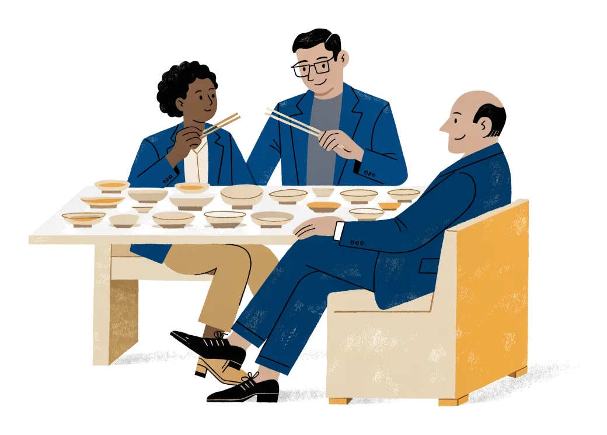
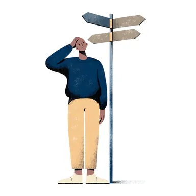
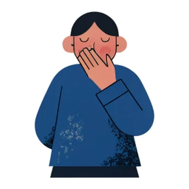
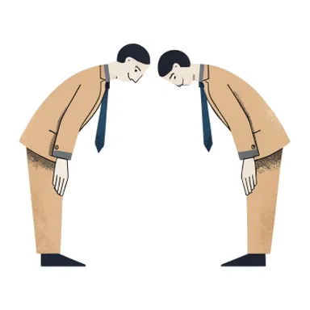
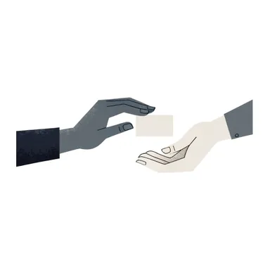
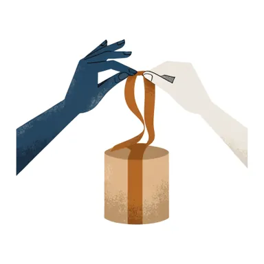
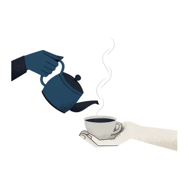
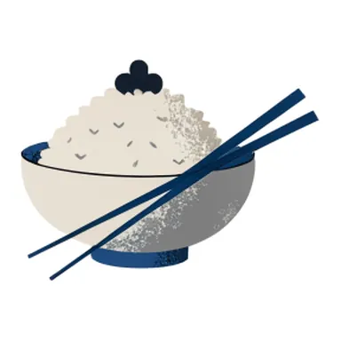
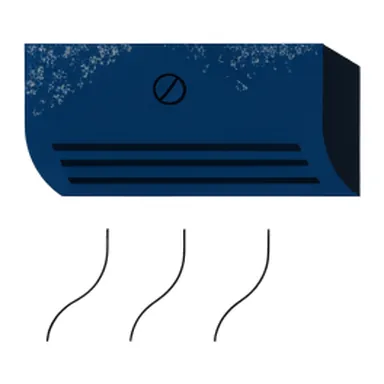
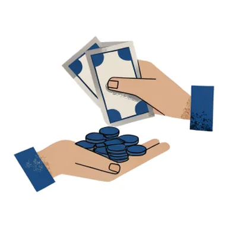

배우기 전에 먼저 해 보세요. 틀려도 괜찮아요.
Ich hätte früher fragen sollen.은 무슨 뜻일까요?
hätte … sollen은 하지 않은 일을 아쉬워하는 말이에요.
Wenn ich Zeit gehabt hätte, wäre ich gekommen.에서 나는 갔나요?
실제로는 시간이 없어서 가지 못했어요.
B1.2 Perspektiven · Lektion 5
여행과 문화 차이
음성은 준비 중이에요. 듣기 단추와 받아쓰기는 음성이 올라오면 쓸 수 있어요. 그동안은 글을 읽으면서 공부해요.

다른 나라에 가면 기대한 것과 다른 일을 겪어요. 돌아와서는 '그때 이렇게 할걸' 하는 생각이 들어요. 이 과에서는 지나간 일을 달리 상상하는 말을 배워요. Ich hätte früher fragen sollen. Wenn ich das gewusst hätte, wäre ich früher gekommen. 문화 차이를 설명하고 아쉬운 일을 말하는 법도 익혀요.
문법 Konjunktiv II der Vergangenheit (Ich hätte … sollen, Wenn ich … gewesen wäre)
과제대학교환 학기에 겪은 문화 차이 발표하기
과제직장해외 출장에서 겪은 차이를 팀에 전하기
이 과를 마치면 기대와 현실을 비교하고, 아쉬운 일을 말하고, 문화 차이를 설명할 수 있어요.
이 과에서 쓸 말이에요.
배우기 전에 먼저 해 보세요. 틀려도 괜찮아요.
Ich hätte früher fragen sollen.은 무슨 뜻일까요?
hätte … sollen은 하지 않은 일을 아쉬워하는 말이에요.
Wenn ich Zeit gehabt hätte, wäre ich gekommen.에서 나는 갔나요?
실제로는 시간이 없어서 가지 못했어요.
Lektion 4의 낱말 다섯 개를 다시 떠올려 보세요.
2028년 7월, WG 부엌이에요. Jiu의 부모님이 열흘 동안 처음으로 독일에 다녀가셨어요. Lena가 어땠는지 물어요.
들으면서 찾아보세요. Jiu의 부모님은 일요일에 무엇 때문에 놀랐나요?
7월, Frau Hoffmann의 사무실이에요. 두 사람은 부산의 협력 회사에 출장을 다녀왔어요. Frau Hoffmann에게는 첫 한국 방문이었어요.
들으면서 찾아보세요. Frau Hoffmann은 회의에서 무슨 말을 했나요?
7월의 토요일, 마인강 가의 카페예요. Sora가 독일에 온 지 2년 반이 됐어요. Frau Becker가 지난 시간을 돌아보는 질문을 해요.
들으면서 찾아보세요. Sora는 회사에서 첫 주에 무엇 때문에 슬펐나요?
세 대화를 듣고 답하세요.
Jiu의 부모님은 첫 일요일에 왜 놀랐나요?
Das Hotel in Heidelberg hatte eine Klimaanlage.
에어컨이 없었고 기온이 35도였어요.
식당에서 무슨 일이 있었나요?
Frau Hoffmann은 명함을 어떻게 줬나요?
In Korea schenkt man sich zuerst selbst Wasser ein.
먼저 남의 잔을 채워 줘요.
Frau Hoffmann은 회의에서 무슨 말을 했나요?
Sora는 무엇을 후회하나요?
Frau Becker wäre gern länger in Frankreich geblieben.
낱말 51개예요. 명사는 der, die, das를 색으로 구분했어요.
die Wirklichkeit 현실
Die Wirklichkeit war ganz anders.현실은 아주 달랐어요.
das Ausland 외국
Sie hat zwei Jahre im Ausland gelebt.그 사람은 외국에서 2년 동안 살았어요.
der Aufenthalt, die Aufenthalte 머무는 일, 체류
Der Aufenthalt in Busan war kurz.부산에서는 짧게 머물렀어요.
das Erlebnis, die Erlebnisse 겪은 일
Die Reise war ein tolles Erlebnis.그 여행은 멋진 경험이었어요.
erleben (hat erlebt) 겪다
So etwas habe ich noch nie erlebt.그런 일은 겪어 본 적이 없어요.
der Kulturschock 문화 충격
Am Anfang hatte ich einen Kulturschock.처음에는 문화 충격을 받았어요.
fremd 낯선
In einem fremden Land ist vieles anders.낯선 나라에서는 많은 것이 달라요.
ungewohnt 익숙하지 않은
Das frühe Abendessen war ungewohnt.이른 저녁 식사가 익숙하지 않았어요.
vertraut 익숙한
Inzwischen ist mir die Stadt vertraut.이제는 이 도시가 익숙해요.
erstaunt 놀란
Mein Vater war ganz erstaunt.아버지가 깜짝 놀라셨어요.

verwirrt 어리둥절한
Die vielen Regeln haben mich verwirrt.규칙이 많아서 어리둥절했어요.

peinlich 민망한
Das war mir sehr peinlich.그건 정말 민망했어요.
das Missgeschick, die Missgeschicke 뜻하지 않은 실수
Mir ist ein Missgeschick passiert.제가 실수를 하나 했어요.
ins Fettnäpfchen treten 실례되는 실수를 하다
Im Ausland tritt man leicht ins Fettnäpfchen.외국에서는 실례를 하기 쉬워요.
bereuen (hat bereut) 후회하다
Ich bereue die Entscheidung nicht.저는 그 결정을 후회하지 않아요.
beinahe 하마터면, 거의
Beinahe hätte ich den Flug verpasst.하마터면 비행기를 놓칠 뻔했어요.
die Höflichkeit 예의
Höflichkeit ist in jedem Land wichtig.예의는 어느 나라에서나 중요해요.
unhöflich 예의 없는
Es ist unhöflich, zu spät zu kommen.늦게 오는 것은 예의가 아니에요.
das Verhalten 행동
Sein Verhalten hat mich überrascht.그 사람의 행동에 놀랐어요.
sich verhalten (du verhältst dich, hat sich verhalten) 행동하다
Wie verhält man sich bei einer Einladung?초대받았을 때는 어떻게 행동해요?
die Sitte, die Sitten 풍습, 예절
Andere Länder, andere Sitten.나라가 다르면 풍습도 달라요.
die Tradition, die Traditionen 전통
Das ist bei uns Tradition.그건 우리 전통이에요.
die Begrüßung, die Begrüßungen 인사
Bei der Begrüßung gibt man sich die Hand.인사할 때 악수를 해요.

sich verbeugen (hat sich verbeugt) 허리를 굽혀 인사하다
In Korea verbeugt man sich.한국에서는 허리를 굽혀 인사해요.
die Geste, die Gesten 몸짓
Diese Geste bedeutet hier etwas anderes.이 몸짓은 여기서 다른 뜻이에요.
die Anrede, die Anreden 부르는 말
Die richtige Anrede ist wichtig.알맞게 부르는 것이 중요해요.
die Hierarchie, die Hierarchien 위아래 질서
In manchen Firmen ist die Hierarchie flach.위아래가 뚜렷하지 않은 회사도 있어요.
der Respekt 존중
Ich habe großen Respekt vor ihr.저는 그 사람을 깊이 존중해요.
respektieren (hat respektiert) 존중하다
Wir respektieren andere Meinungen.우리는 다른 의견을 존중해요.
sich anpassen (hat sich angepasst) 맞추다, 적응하다
Man muss sich nicht immer anpassen.늘 맞춰야 하는 건 아니에요.
indirekt 에둘러 말하는
Er hat es sehr indirekt gesagt.그 사람은 아주 에둘러 말했어요.
die Kritik 비판
Die Kritik war nicht böse gemeint.그 비판은 나쁜 뜻이 아니었어요.
kritisieren (hat kritisiert) 비판하다
Sie hat den Entwurf kritisiert.그 사람은 시안을 비판했어요.
loben (hat gelobt) 칭찬하다
Der Chef lobt selten.팀장은 칭찬을 드물게 해요.
die Geschäftsreise, die Geschäftsreisen 출장
Nächste Woche bin ich auf Geschäftsreise.다음 주에 출장을 가요.

die Visitenkarte, die Visitenkarten 명함
Darf ich Ihnen meine Visitenkarte geben?제 명함을 드려도 될까요?
der Gastgeber, die Gastgeber 손님을 맞는 사람
Der Gastgeber hat uns vom Flughafen abgeholt.우리를 맞는 분이 공항으로 데리러 왔어요.
die Gastfreundschaft 손님 대접
Vielen Dank für Ihre Gastfreundschaft.따뜻하게 맞아 주셔서 감사합니다.
das Gastgeschenk, die Gastgeschenke 손님이 가져가는 선물
Als Gastgeschenk habe ich Tee mitgebracht.선물로 차를 가져왔어요.

auspacken (hat ausgepackt) 풀다, 뜯다
Darf ich das Geschenk gleich auspacken?선물을 바로 뜯어 봐도 될까요?

einschenken (hat eingeschenkt) 따르다
Darf ich Ihnen Wasser einschenken?물을 따라 드릴까요?
anstoßen (du stößt an, hat angestoßen) 잔을 부딪치다
Wir stoßen auf den Erfolg an.성공을 위해 건배해요.

das Stäbchen, die Stäbchen 젓가락
Kannst du mit Stäbchen essen?젓가락으로 먹을 줄 알아요?

die Klimaanlage, die Klimaanlagen 에어컨
Das Hotel hatte keine Klimaanlage.호텔에 에어컨이 없었어요.
die Öffnungszeit, die Öffnungszeiten 여는 시간
Die Öffnungszeiten stehen an der Tür.여는 시간은 문에 적혀 있어요.

bar 현금으로
Hier kann man nur bar bezahlen.여기는 현금만 받아요.
umbuchen (hat umgebucht) 예약을 바꾸다
Ich musste den Flug umbuchen.비행기 예약을 바꿔야 했어요.
stornieren (hat storniert) 예약을 취소하다
Wir haben das Hotel storniert.호텔 예약을 취소했어요.
das Vorurteil, die Vorurteile 편견
Jeder hat Vorurteile.누구에게나 편견이 있어요.
das Klischee, die Klischees 틀에 박힌 생각
Das ist nur ein Klischee.그건 틀에 박힌 생각일 뿐이에요.
tolerant 너그러운
Ich versuche, tolerant zu sein.저는 너그러워지려고 해요.
이 과의 낱말로 여덟 문제를 풀어요.
Perfekt의 haben과 sein을 hätte와 wäre로 바꿔요.
지금 일은 hätte와 würde로, 지나간 일은 hätte나 wäre와 Partizip으로 말해요.
규칙
B1.1에서는 지금 일을 달리 상상하는 말을 배웠어요. Wenn ich Zeit hätte, würde ich kommen. 이미 지나간 일을 달리 상상할 때는 hätte나 wäre에 Partizip을 붙여요. Perfekt에서 haben을 쓰는 동사는 hätte, sein을 쓰는 동사는 wäre예요. 실제로는 그렇게 되지 않았다는 뜻이 들어 있어요.
| 실제로 있었던 일 | 달리 상상한 일 |
|---|---|
| Ich habe nicht gefragt. | Ich hätte gefragt. |
| Ich bin nicht geblieben. | Ich wäre geblieben. |
| Wir haben nichts gewusst. | Wir hätten es gewusst. |
| Sie ist nicht gekommen. | Sie wäre gekommen. |
주의 gern을 넣으면 이루지 못한 바람이 돼요. Ich wäre gern länger geblieben. Ich hätte gern mehr gesehen. würde는 지나간 일에 쓰지 않아요. Ich würde geblieben이라고 하면 틀려요.
규칙을 보고 바로 확인해 보세요.
Ohne deine Hilfe … ich die Prüfung nicht bestanden. 빈칸에 알맞은 말은 무엇인가요?
규칙
지나간 일을 두고 '그때 ~했더라면'이라고 말할 때는 wenn 문장과 주문장에 모두 hätte나 wäre와 Partizip을 써요. wenn 문장에서는 hätte나 wäre가 맨 끝에 오고, 주문장에서는 쉼표 바로 뒤에 와요. 두 문장의 동사가 다르면 hätte와 wäre가 섞일 수 있어요.
| wenn 문장 | 주문장 |
|---|---|
| Wenn ich das gewusst hätte, | hätte ich gefragt. |
| Wenn ich früher gekommen wäre, | hätte ich dich gesehen. |
| Wenn es nicht geregnet hätte, | wären wir spazieren gegangen. |
주의 지금 일과 지나간 일을 가려 쓰세요. Wenn ich Zeit hätte, würde ich kommen.은 지금 시간이 없다는 말이고, Wenn ich Zeit gehabt hätte, wäre ich gekommen.은 그때 시간이 없었다는 말이에요.
규칙을 보고 바로 확인해 보세요.
Wenn ich früher aufgestanden …, hätte ich den Zug nicht verpasst. 빈칸에 알맞은 말은 무엇인가요?
규칙
하지 않아서 아쉬운 일은 hätte와 Infinitiv와 sollen으로 말해요. 할 수 있었는데 하지 않은 일은 können, 꼭 했어야 하는 일은 müssen을 써요. 이때는 Partizip을 쓰지 않고 Infinitiv 두 개를 나란히 써요. 일을 나타내는 동사가 앞에, sollen이나 können이 맨 끝에 와요. 조동사가 있으면 늘 hätte를 써요.
| 뜻 | 보기 |
|---|---|
| 했어야 했어요 | Ich hätte früher fragen sollen. |
| 할 수 있었어요 | Du hättest anrufen können. |
| 꼭 했어야 했어요 | Das hätte ich wissen müssen. |
| 하지 말았어야 했어요 | Ich hätte das nicht sagen sollen. |
주의 이 틀은 스스로를 탓할 때도, 남을 가볍게 탓할 때도 써요. Du hättest mich fragen können!은 '나한테 물어볼 수도 있었잖아요'라는 말이에요. 사과할 때 붙이면 진심이 전해져요. Entschuldigung, ich hätte früher anrufen sollen.
규칙을 보고 바로 확인해 보세요.
Ich hätte früher Deutsch … 뒤에 올 말은 무엇인가요?
규칙
일어날 뻔했지만 일어나지 않은 일은 fast나 beinahe와 함께 hätte, wäre로 말해요. fast가 맨 앞에 오면 바로 뒤에 hätte나 wäre가 오고, Partizip은 문장 끝에 와요. 실제로는 그 일이 일어나지 않았어요.
| 일어날 뻔한 일 | 실제 |
|---|---|
| Fast hätte ich den Zug verpasst. | Ich habe ihn noch bekommen. |
| Beinahe wäre ich gefallen. | Ich bin nicht gefallen. |
| Fast hätte ich es vergessen. | Ich habe daran gedacht. |
주의 여행 이야기에 잘 어울리는 말이에요. 아쉬움을 나타내는 Schade, dass …도 함께 알아 두세요. Schade, dass wir nicht länger geblieben sind. 같은 뜻을 Wir wären gern länger geblieben.으로도 말할 수 있어요.
규칙을 보고 바로 확인해 보세요.
Fast … ich meinen Pass vergessen. 빈칸에 알맞은 말은 무엇인가요?
듣고 알맞은 것을 고르세요.
Jiu는 다른 호텔을 잡았나요?
Wenn ich das gewusst hätte, hätte ich ein anderes Hotel gebucht.
Dohyun은 미리 설명했나요?
Ich hätte Ihnen das vorher erklären sollen.
Frau Becker는 무슨 말을 하나요?
Ich wäre gern länger geblieben.
거래는 어떻게 됐나요?
Fast hätte ich das Geschäft kaputt gemacht.
한국에서 한 해를 산 독일 사람의 라디오 인터뷰예요. 듣고 답하세요.
Ein Jahr in Seoul
Reporterin Herr Albrecht, Sie haben ein Jahr in Seoul gearbeitet. Was hat Sie am meisten überrascht?
Herr Albrecht Die Geschwindigkeit. Alles geht schnell: das Internet, die Lieferung, sogar das Essen im Restaurant.
Reporterin Und was war schwierig?
Herr Albrecht Die Sprache. Ich hätte vorher Koreanisch lernen sollen. Ohne meine Kollegen wäre ich verloren gewesen.
Reporterin Sind Sie auch in Fettnäpfchen getreten?
Herr Albrecht Oft! Am ersten Tag habe ich meinen Chef mit dem Vornamen angeredet. Das war sehr peinlich.
Reporterin Was würden Sie heute anders machen?
Herr Albrecht Ich wäre länger geblieben. Ein Jahr war zu kurz. Wenn ich die Möglichkeit gehabt hätte, hätte ich den Vertrag verlängert.
Was hat Herrn Albrecht am meisten überrascht?
Was hätte er vorher tun sollen?
Er hat seinen Chef am ersten Tag mit dem Vornamen angeredet.
Wie lange war er in Seoul?
Er hat seinen Vertrag verlängert.
그럴 수 있었다면 연장했을 거라고 했어요.
독일에서 교환 학기를 보낸 한국 학생이 쓴 글이에요. 읽고 답하세요.
Mein Semester in Deutschland
Im letzten Winter habe ich ein Semester in Tübingen studiert. Vor der Reise hatte ich viele Erwartungen: alte Häuser, gutes Brot, pünktliche Züge.
Die Häuser und das Brot waren wirklich wunderbar. Die Züge waren leider oft zu spät.
Am meisten hat mich das Seminar überrascht. Die Studenten haben dem Professor direkt gesagt, wenn sie anderer Meinung waren. In Korea wäre das unhöflich gewesen.
Am Anfang habe ich im Seminar nichts gesagt. Ich hätte mehr Mut haben sollen. Erst im letzten Monat habe ich meine Meinung gesagt, und der Professor hat mich gelobt.
Wenn ich länger geblieben wäre, hätte ich sicher noch mehr gelernt. Aber eines weiß ich jetzt: Eine andere Meinung zu haben ist nicht unhöflich.
Wo hat die Studentin studiert?
Die Züge waren immer pünktlich.
자주 늦었다고 썼어요.
Was hat sie im Seminar überrascht?
Was hätte sie am Anfang tun sollen?
Sie hat das ganze Semester lang nichts gesagt.
마지막 달에 자기 의견을 말했어요.
hätte와 wäre 가운데 알맞은 것을 고르세요.
Ich dich gern angerufen.
전화하고 싶었어요.
Ich gern länger geblieben.
더 오래 있고 싶었어요.
bleiben은 sein과 써요.
Wir fast zu spät gekommen.
우리는 하마터면 늦을 뻔했어요.
Das ich nicht gedacht.
그럴 줄은 몰랐어요.
Ohne dich ich nicht nach Deutschland gegangen.
당신이 없었으면 저는 독일에 가지 않았을 거예요.
Mit mehr Zeit wir auch Berlin gesehen.
시간이 더 있었더라면 베를린도 봤을 거예요.
지나간 일의 가정이에요. 알맞은 말을 고르세요.
Wenn ich das gewusst , hätte ich gefragt.
그걸 알았더라면 물어봤을 거예요.
Wenn ich früher aufgestanden , hätte ich den Zug nicht verpasst.
더 일찍 일어났더라면 기차를 놓치지 않았을 거예요.
Wenn wir am Samstag eingekauft hätten, wir etwas zu essen gehabt.
토요일에 장을 봤더라면 먹을 것이 있었을 텐데요.
Wenn es nicht geregnet hätte, wir spazieren gegangen.
비가 오지 않았더라면 산책을 갔을 거예요.
Wenn du mich gefragt hättest, ich dir geholfen.
저한테 물어봤더라면 도와줬을 거예요.
아쉬운 일을 맞게 말한 것을 고르세요.
Ich hätte früher Deutsch .
더 일찍 독일어를 배웠어야 했어요.
Infinitiv가 앞에, sollen이 맨 끝에 와요.
Du hättest mich .
저한테 전화할 수도 있었잖아요.
Das hätte ich .
그걸 알았어야 했는데요.
Ich das nicht sagen sollen.
그 말은 하지 말았어야 했어요.
조동사가 있으면 늘 hätte예요.
Wir hätten ein anderes Hotel .
다른 호텔을 잡았어야 했어요.
지금 일인지 지나간 일인지 보고 고르세요.
Wenn ich jetzt Zeit , würde ich dir helfen.
지금 시간이 있으면 도와줄 텐데요.
Wenn ich gestern Zeit , hätte ich dir geholfen.
어제 시간이 있었더라면 도와줬을 거예요.
Wenn ich reich wäre, ich eine Weltreise machen.
제가 부자라면 세계 여행을 할 거예요.
Wenn ich damals in Seoul geblieben wäre, ich dich nie kennengelernt.
그때 서울에 남았더라면 당신을 만나지 못했을 거예요.
Fast ich meinen Pass vergessen.
하마터면 여권을 잊을 뻔했어요.
낱말을 순서대로 눌러 문장을 만드세요.
더 일찍 물어봤어야 했어요.
그걸 알았더라면 물어봤을 거예요.
더 오래 있고 싶었어요.
하마터면 비행기를 놓칠 뻔했어요.
그걸 알았어야 했는데요.
뜻이 반대인 말을 짝지으세요.
빈칸에 알맞은 낱말을 쓰세요.
Darf ich Ihnen meine geben?
제 명함을 드려도 될까요?
Das Hotel hatte keine .
호텔에 에어컨이 없었어요.
Hier kann man nur bezahlen.
여기는 현금만 받아요.
Vielen Dank für Ihre .
따뜻하게 맞아 주셔서 감사합니다.
듣고 그대로 써 보세요.
음성 준비 중Ich hätte vieles besser planen sollen. 여러 가지를 더 잘 계획했어야 했어요.
음성 준비 중Ich wäre gern länger geblieben. 더 오래 있고 싶었어요.
음성 준비 중Wenn ich das gewusst hätte, hätte ich gefragt. 그걸 알았더라면 물어봤을 거예요.
Vor der Reise hatte ich erwartet, dass alles pünktlich ist. 떠나기 전에는 모든 것이 제시간에 된다고 기대했어요.
In Wirklichkeit war es ganz anders. 현실은 아주 달랐어요.
Am meisten hat mich überrascht, dass die Geschäfte sonntags geschlossen sind. 가장 놀란 것은 가게가 일요일에 닫는다는 거였어요.
Das hätte ich nicht gedacht. 그럴 줄은 몰랐어요.
Ich hätte früher fragen sollen. 더 일찍 물어봤어야 했어요.
Ich wäre gern länger geblieben. 더 오래 있고 싶었어요.
Wenn ich das gewusst hätte, hätte ich es anders gemacht. 그걸 알았더라면 다르게 했을 거예요.
Schade, dass ich so wenig gesehen habe. 본 것이 너무 적어서 아쉬워요.
Bei uns ist es üblich, sich zu verbeugen. 우리는 허리를 굽혀 인사하는 것이 보통이에요.
In Deutschland sagt man direkt, was man denkt. 독일에서는 생각하는 것을 곧바로 말해요.
In Korea wäre das unhöflich gewesen. 한국에서라면 그건 예의가 아니었을 거예요.
Das ist nicht böse gemeint. 나쁜 뜻으로 하는 게 아니에요.
Am besten fragt man: Wie macht man das hier? 여기서는 어떻게 하느냐고 묻는 것이 가장 좋아요.
Man sollte die Visitenkarte mit beiden Händen geben. 명함은 두 손으로 드리는 것이 좋아요.
Ein direktes Nein sollte man vermeiden. 대놓고 아니라고 하는 말은 삼가는 것이 좋아요.
Mit ein bisschen Humor geht alles leichter. 조금 웃어넘기면 모든 일이 쉬워져요.
Trotzdem war es ein tolles Erlebnis. 그래도 멋진 경험이었어요.
Ich habe viel über mich selbst gelernt. 저 자신에 대해 많이 배웠어요.
Ich bereue nichts. 후회하는 것은 없어요.
Beim nächsten Mal mache ich es besser. 다음번에는 더 잘할 거예요.
과제 고르기
역할 대화와 말하기, 쓰기 과제는 대학 생활과 직장 생활 두 가지예요. 하나를 고르면 다음 과에서도 그쪽 과제가 나와요. 언제든 바꿀 수 있어요.
대화 A에서 역할을 하나 고르세요. 상대의 말은 글로 읽고, 내 차례에는 직접 말해요.
대화 B에서 역할을 하나 고르세요. 상대의 말은 글로 읽고, 내 차례에는 직접 말해요.
지난 일을 떠올리고 칸을 채우세요. 완성된 문장을 소리 내어 읽어 보세요.
Ich hätte früher Deutsch lernen sollen.
Wenn ich mehr Zeit gehabt hätte, hätte ich mehr Städte gesehen.
Ich wäre gern länger geblieben.
나는 지난 학기에 독일의 한 대학에서 교환 학생으로 공부했어요. 세미나에서 그때 겪은 문화 차이를 짧게 발표했고, 이제 듣던 사람들이 물어요.
가장 놀란 것은 학생들이 교수에게 반대 의견을 곧바로 말한다는 거였어요. 나는 처음에 세미나에서 아무 말도 하지 못했어요. 더 용기를 냈어야 했어요. 마지막 달에야 의견을 말했어요. 더 오래 있었더라면 더 많이 배웠을 거예요.
발표를 들은 사람이 물어요. 쪽지를 보고 답하세요. 질문을 듣고 소리 내어 답한 뒤 예시 답과 비교해 보세요.
Vielen Dank für die Präsentation. Was hat Sie in Deutschland am meisten überrascht? 발표 감사합니다. 독일에서 무엇이 가장 놀라웠나요?
Am meisten hat mich überrascht, dass die Studenten dem Professor direkt widersprechen.
Wäre das in Korea nicht möglich? 한국에서는 그럴 수 없나요?
Es wäre unhöflich gewesen. Bei uns sagt man seine Meinung eher indirekt.
Wie haben Sie sich im Seminar verhalten? 세미나에서는 어떻게 하셨어요?
Am Anfang habe ich nichts gesagt. Ich hätte mehr Mut haben sollen.
Was würden Sie anderen Studierenden raten? 다른 학생들에게 무슨 조언을 하시겠어요?
Sie sollten von Anfang an Fragen stellen. Eine andere Meinung ist nicht unhöflich.
Bereuen Sie etwas? 후회하는 것이 있나요?
Nur eines: Ich wäre gern länger geblieben. Wenn ich ein Jahr geblieben wäre, hätte ich noch mehr gelernt.
Mein Semester im Ausland
교환 학기에 겪은 문화 차이를 발표할 글로 써 보세요. 일곱 문장쯤 써요.
Im letzten Semester habe ich in Deutschland studiert. Vor der Reise hatte ich erwartet, dass alles pünktlich und ordentlich ist. In Wirklichkeit waren die Züge oft zu spät. Am meisten hat mich überrascht, dass die Studenten dem Professor direkt widersprechen. In Korea wäre das unhöflich gewesen. Am Anfang habe ich im Seminar nichts gesagt. Ich hätte mehr Mut haben sollen. Wenn ich länger geblieben wäre, hätte ich sicher noch mehr gelernt. Trotzdem war es ein tolles Erlebnis, und ich habe viel über mich selbst gelernt.
다 쓴 뒤에 확인해 보세요.
나는 지난주에 팀장과 함께 서울의 협력 회사에 출장을 다녀왔어요. 월요일 회의에서 동료들이 출장이 어땠는지 물어요.
대접은 훌륭했어요. 하지만 작은 실수가 있었어요. 팀장이 명함을 한 손으로 줬고, 회의에서 대놓고 Nein이라고 했어요. 내가 미리 설명했어야 했어요. 다음 출장 전에는 예절을 정리한 쪽지를 나눠 주려고 해요.
동료가 물어요. 쪽지를 보고 답하세요. 질문을 듣고 소리 내어 답한 뒤 예시 답과 비교해 보세요.
Na, wie war die Reise nach Seoul? 그래, 서울 출장은 어땠어요?
Sehr gut. Die Gastfreundschaft war unglaublich. Aber wir sind auch in ein paar Fettnäpfchen getreten.
Was ist denn passiert? 무슨 일이 있었는데요?
Unsere Chefin hat die Visitenkarte mit einer Hand gegeben. In Korea gibt man sie mit beiden Händen.
Wusste sie das nicht? 팀장이 그걸 몰랐어요?
Nein. Ich hätte es ihr vorher erklären sollen.
Und die Besprechung? 회의는요?
Sie hat direkt Nein gesagt. Das ist dort ungewohnt. Fast hätten wir ein Problem bekommen.
Was machen wir beim nächsten Mal anders? 다음번에는 뭘 다르게 해요?
Ich schreibe für alle eine Liste mit den wichtigsten Regeln. Wenn wir die gehabt hätten, wäre nichts passiert.
Bericht für das Team
해외 출장에서 겪은 차이를 팀에 알리는 메일을 써 보세요. 일곱 문장쯤 써요.
Liebe Kolleginnen und Kollegen, letzte Woche waren Frau Hoffmann und ich auf Geschäftsreise in Seoul. Die Gastfreundschaft war unglaublich, und die Gespräche waren erfolgreich. Trotzdem sind wir in ein paar Fettnäpfchen getreten. In Korea gibt man die Visitenkarte mit beiden Händen, und ein direktes Nein ist ungewohnt. Ich hätte das vorher erklären sollen. Wenn wir besser vorbereitet gewesen wären, hätten wir uns sicherer gefühlt. Für die nächste Reise schreibe ich eine Liste mit den wichtigsten Regeln. Viele Grüße, Minji Choi
다 쓴 뒤에 확인해 보세요.
Ich kann sagen, was ich erwartet hatte und wie es wirklich war.무엇을 기대했고 실제로는 어땠는지 말할 수 있어요.
Ich kann sagen, was ich anders hätte machen sollen.무엇을 다르게 했어야 했는지 말할 수 있어요.
Ich kann einen kulturellen Unterschied erklären.문화 차이를 설명할 수 있어요.
Ich kann über Dinge sprechen, die fast passiert wären.일어날 뻔한 일을 이야기할 수 있어요.